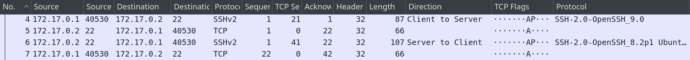
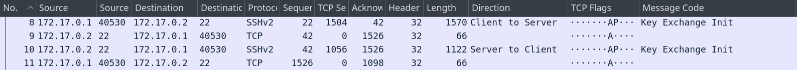
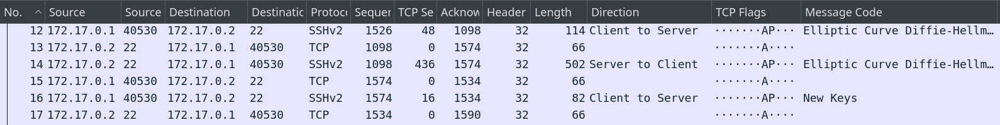
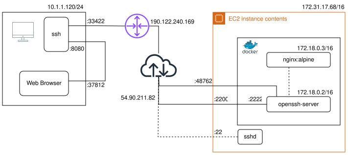

---
displayMode: compact
config:
htmlLabels: false
---
sequenceDiagram
autonumber
participant C as 💻 Cliente
participant S as 🖧 Servidor
rect rgb(31, 119, 180)
note over C,S: Fase 1: Conexión TCP
C->>S: SYN
S-->>C: SYN-ACK
C->>S: ACK
end
Secure Shell Protocol
Capa de aplicación - Redes II
08 de junio, 2026
Tópicos a trabajar
1. ¿Qué es SSH?
2. Handshake
3. Métodos de Autenticación
4. Demo
¿Qué es Secure Shell Protocol?
Protocolo de red criptográfico que permite operar servicios de red de forma segura en redes no seguras
SSH en el tiempo
Previo a 1995: user & password / sin cifrado / texto plano /
Telnet/rlogin,rsh,rcp(Berkley)
1995: Tatu Ylönen Diseña e implementa
ssh(v1) yslogin
| Confidencialidad | Los datos viajan cifrados |
| Autenticación | Se verifica la identidad de ambos extremos |
| Integridad | No se pueden modificar entre extremos sin detección |
SSH en el tiempo
1999: OpenBSD Secure Shell más conocido como
OpenSSH
Implementación más utilizada en la actualidad
OpenSource: github.com/openssh/openssh-portable
Se compone de:
sshysshd: Cliente y Servidor SSHscp: Copia encriptada de archivossftp: Cliente de transferencia de archivosssh-keygen: Generación y manejo de clavesssh-agent,ssh-add,ssh-keyscan

SSH en el tiempo
2006:
SSHv2
- Mayor seguridad
- Nuevos métodos de intercambio de claves
- Mayor integridad de datos
SSH: Resumen de características
Arquitectura Cliente-Servidor
Capa de Red:
IPCapa de Transporte:
TCP(orientado a la conexión)- Puerto asignado al servidor:
22
- Puerto asignado al servidor:
3 capas internas:
- Capa de transporte
- Capa de autenticación
- Capa de conexión
Capa de transporte
Antes de poder cifrar la conexión, cliente y servidor negocian utilizando texto plano
Inicio de la comunicación
Intercambios de versión
- Inicia el proceso de intercambio entre cliente y servidor
SSH
---
displayMode: compact
config:
htmlLabels: false
---
sequenceDiagram
autonumber
participant C as 💻 Cliente
participant S as 🖧 Servidor
rect rgb(44, 160, 44)
note over C,S: Fase 2: Intercambio de versiones
C->>S: SSH-2.0-OpenSSH_9.0
S-->>C: SSH-2.0-OpenSSH_8.2p1
end

Mensajes SSH_MSG_KEXINIT
- Negociación de algoritmos de:
- Encriptación
- Integridad
- Compresión
---
displayMode: compact
config:
htmlLabels: false
---
sequenceDiagram
autonumber
participant C as 💻 Cliente
participant S as 🖧 Servidor
rect rgb(214, 39, 40)
note over C,S: Fase 3: Negociación de algoritmos
C->>S: SSH_MSG_KEXINIT
S-->>C: SSH_MSG_KEXINIT
end

Claves de cifrado
- Se intercambia el secreto
Ky el hashHy se calculan las claves para encriptar la comunicación
La sesión queda encriptada
---
displayMode: compact
config:
htmlLabels: false
---
sequenceDiagram
autonumber
participant C as 💻 Cliente
participant S as 🖧 Servidor
rect rgb(148, 103, 189)
note over C,S: Fase 4: Canal cifrado activo
C->>S: SSH_MSG_NEWKEYS
S-->>C: SSH_MSG_NEWKEYS
end

Autenticación
Handshake completo — ¿y ahora?
El handshake estableció el canal cifrado. Recién ahora el servidor le pregunta al cliente:
“¿Quién sos?”
La autenticación ocurre dentro del canal cifrado — nadie en la red puede ver cómo te identificás.
Evaluando 3 Formas de Conectarse por SSH
Analizaremos cada método desde dos perspectivas:
- 🖥️ Cliente (PowerShell / terminal local)
- 🖧 Servidor (
/var/log/auth.log)
Generación de Claves SSH
¿Por qué Ed25519?
El algoritmo que usa ssh-keygen para generar nuestras llaves.
- Seguro y moderno — estándar recomendado hoy para SSH. Una llave Ed25519 completa tiene ~68 caracteres; una RSA equivalente supera los 500.
- Muy rápido — firma y verificación en microsegundos.
- Verificable — el servidor puede comprobar una firma sin conocer tu llave privada. Es exactamente lo que ocurre en los Casos 1 y 2.
ssh-keygen — ¿Qué es y qué hace?
ssh-keygen1 genera y administra llaves SSH.
- Sin argumentos — genera una llave Ed25519 por defecto.
-t ed25519— especifica el tipo de llave explícitamente.- Formato OpenSSH — guarda la llave privada con un comentario (
usuario@host) para identificar su origen. - Passphrase — cifra la llave privada en disco. Si se pierde, hay que generar un nuevo par y registrarlo en cada servidor.
Generando el par de llaves
Con ssh-keygen -t ed25519 generamos el par localmente. La llave privada nunca sale de la máquina.
PS> ssh-keygen -t ed25519
# El sistema propone una ruta por defecto — Enter para aceptar:
Enter file in which to save the key (C:\Users\berto/.ssh/id_ed25519):
# Passphrase opcional para cifrar la llave privada en disco:
Enter passphrase (empty for no passphrase):
# Dos archivos generados:
Your identification has been saved in C:\Users\berto/.ssh/id_ed25519
Your public key has been saved in C:\Users\berto/.ssh/id_ed25519.pub
# Fingerprint — huella digital única del par de llaves:
The key fingerprint is:
SHA256:ztzVw1mjwIuJpexHxr75Z0J5GXjhgltVFD1wit4tE6I berto@DESKTOP-60294G4Normalmente cada usuario ejecuta esto una sola vez para crear su llave en
~/.ssh/id_ed25519. El administrador del sistema también puede usarlo para generar las claves de host del servidor. Fuente: man.openbsd.org/ssh-keygen.1
Registrando la llave en el servidor
Con el par generado, copiamos la llave pública al servidor para que sshd pueda reconocernos en conexiones futuras.
# Opción A — comando automático (Linux/macOS):
$ ssh-copy-id umbral@103.199.187.160
# Opción B — manual desde PowerShell (Windows):
PS> Get-Content $env:USERPROFILE\.ssh\id_ed25519.pub | ssh umbral@103.199.187.160 \
"mkdir -p ~/.ssh && cat >> ~/.ssh/authorized_keys && chmod 600 ~/.ssh/authorized_keys"
# Verificación en el servidor:
$ cat ~/.ssh/authorized_keysAmbos métodos agregan la llave pública a
~/.ssh/authorized_keysen el servidor — el archivo quesshdconsulta para decidir si acepta una conexión por llave pública.
Observando la negociación con -v
En los tres casos usamos ssh -v para ver el flujo de autenticación entre cliente y servidor.
-v— Modo verbose Hace quesshimprima mensajes de depuración sobre su progreso. Se puede repetir hasta 3 veces (-vvv) para mayor detalle. Fuente: man.openbsd.org/ssh.1
Caso 1: Autenticación por PublicKey
Perspectiva del Cliente — Flujo de negociación
Con la llave registrada en el servidor, la autenticación ocurre sin contraseña — el servidor firma un desafío criptográfico con su llave privada local.
# 1. El servidor anuncia los métodos disponibles:
debug1: Authentications that can continue: publickey,password
# 2. El cliente detecta la llave local y la ofrece:
debug1: Will attempt key: C:\\Users\\berto/.ssh/id_ed25519 ED25519 SHA256:ztzVw1mjwIuJpexHxr75Z0J5GXjhgltVFD1wit4tE6I
# 3. El servidor verifica la firma y acepta:
debug1: Offering public key: C:\\Users\\berto/.ssh/id_ed25519 ED25519 SHA256:ztzVw1mjwIuJpexHxr75Z0J5GXjhgltVFD1wit4tE6I
debug3: send packet: type 50
debug1: Server accepts key: C:\\Users\\berto/.ssh/id_ed25519 ED25519 SHA256:ztzVw1mjwIuJpexHxr75Z0J5GXjhgltVFD1wit4tE6I
debug3: receive packet: type 60
# 4. Autenticación exitosa — sin contraseña:
Authenticated to 103.199.187.160 ([103.199.187.160]:22) using "publickey".Perspectiva del Servidor (/var/log/auth.log)
El demonio sshd busca la llave en authorized_keys, verifica la firma criptográfica y delega la apertura de sesión a PAM— sin que ninguna contraseña viaje por la red.
# 1. sshd busca la llave en authorized_keys:
sshd[1856155]: debug1: trying public key file /home/umbral/.ssh/authorized_keys
sshd[1856155]: debug1: /home/umbral/.ssh/authorized_keys:3: matching key found: ED25519 SHA256:ztzVw1mjwIuJpexHxr75Z0J5GXjhgltVFD1wit4tE6I
# 2. La firma es válida — acceso concedido:
sshd[1856155]: Accepted publickey for umbral from 181.4.156.91 port 55230 ssh2: ED25519 SHA256:ztzVw1mjwIuJpexHxr75Z0J5GXjhgltVFD1wit4tE6I
# 3. PAM abre la sesión (sin verificar contraseña):
sshd[1856155]: pam_unix(sshd:session): session opened for user umbral(uid=1001) by umbral(uid=0)
# 4. El sistema registra la nueva sesión:
systemd-logind[695]: New session 1968 of user umbral.Caso 1: Análisis y Trazabilidad
- El desafío — el servidor manda un número aleatorio cifrado con tu llave pública. Solo quien tenga la privada puede descifrarlo y responder. Si la respuesta es correcta, acceso concedido. Ningún secreto viaja por la red.
- Huella digital auditable — el fingerprint
SHA256:ztzVw1m...queda registrado en el log del servidor, permitiendo identificar exactamente qué llave autenticó cada sesión. - Riesgo de exposición — si la llave privada se filtra (por ejemplo, subida accidentalmente a un repositorio), cualquier persona puede autenticarse como el dueño legítimo. Lo veremos en la demo práctica.
¿Qué pasa si tenés 100 usuarios?
Caso 2: Autenticación por Certificado SSH
Autoridad Certificante (CA)
Una entidad que firma certificados para avalar identidades.
- 🏢 La CA genera un par de llaves propio (
ssh_ca+ssh_ca.pub) - 🎫 Firma la llave pública del usuario → produce un certificado
- 🖥️ El servidor solo necesita conocer
ssh_ca.pubpara validar cualquier certificado emitido por esa CA
Caso 2: Configurando la CA
# 1. Generar el par de llaves de la CA en el servidor:
$ ssh-keygen -t ed25519 -f ssh_ca -C "ca@umbraldesarrollos" -N ""
# 2. Registrar la CA en sshd — el servidor ahora confía en ella:
$ echo "TrustedUserCAKeys /etc/ssh/ca.pub" | sudo tee -a /etc/ssh/sshd_config
# 3. Copiar la CA pública al directorio de sshd:
$ cat ~/ssh-ca/ssh_ca.pub | sudo tee -a /etc/ssh/ca.pub
# 4. Reiniciar sshd para aplicar los cambios:
$ sudo systemctl restart ssh
-f ssh_ca— nombre del archivo de salida (ssh_cayssh_ca.pub).-C "ca@umbraldesarrollos"— identifica quién es la CA en los logs. Texto libre.-N ""— sin passphrase para la llave privada de la CA.
Caso 2: Firmando el certificado de usuario
El cliente genera su par de llaves, nos manda la pública, la firmamos y se la devolvemos como certificado.
# 1. El cliente manda su llave pública al servidor:
PS> scp $env:USERPROFILE\.ssh\id_ed25519.pub umbral@103.199.187.160:~
# 2. El servidor firma la llave pública con la CA (llave privada firma):
$ ssh-keygen -s ssh_ca -I "berto@demo" -n umbral -V +1w ~/id_ed25519.pub
# 3. Certificado generado — válido 1 semana:
Signed user key id_ed25519-cert.pub: id "berto@demo" serial 0 for umbral valid from 2026-06-06T22:36:00 to 2026-06-13T22:37:06
# 4. El servidor devuelve el certificado al cliente:
PS> scp umbral@103.199.187.160:~/id_ed25519-cert.pub $env:USERPROFILE\.ssh\
-I "berto@demo"— el nombre en la entrada: identifica al titular del certificado. Aparece en los logs cuando se conecta.-n umbral— usuario del servidor al que este certificado da acceso.-V +1w— la fecha de vencimiento de la entrada. Podría ser+1d,+2h, etc.
Perspectiva del Cliente — Flujo de negociación
SSH detecta automáticamente el certificado y lo ofrece al servidor.
# 1. El servidor anuncia los métodos disponibles:
debug1: Authentications that can continue: publickey,password
# 2. El cliente ofrece primero la llave pública — el servidor la rechaza:
debug1: Offering public key: C:\\Users\\berto/.ssh/id_ed25519 ED25519 SHA256:ztzVw1m...
debug1: Authentications that can continue: publickey,password
# 3. El cliente ofrece el certificado — el servidor lo acepta:
debug1: Offering public key: C:\\Users\\berto/.ssh/id_ed25519 ED25519-CERT SHA256:ztzVw1m...
debug1: Server accepts key: C:\\Users\\berto/.ssh/id_ed25519 ED25519-CERT SHA256:ztzVw1m...
# 4. Autenticación exitosa por certificado:
Authenticated to 103.199.187.160 ([103.199.187.160]:22) using "publickey".Perspectiva del Servidor (/var/log/auth.log)
El servidor verifica la firma de la CA, valida el certificado y abre la sesión — sin consultar authorized_keys.
# 1. La llave pública sola es rechazada — no está en authorized_keys:
sshd[1947778]: debug1: userauth_pubkey: publickey test pkalg ssh-ed25519 pkblob ED25519 SHA256:ztzVw1m... [preauth]
sshd[1947778]: Failed publickey for umbral from 181.4.156.91 port 55917 ssh2: ED25519 SHA256:ztzVw1m...
# 2. El certificado es verificado contra la CA registrada:
sshd[1947778]: debug1: userauth_pubkey: publickey test pkalg ssh-ed25519-cert-v01@openssh.com pkblob ED25519-CERT SHA256:ztzVw1m... CA ED25519 SHA256:RYDg7BqTaGkZjlBhstyS1gYI51sADkXrxkGQUQmFRNk [preauth]
# 3. Certificado válido — acceso concedido:
sshd[1947778]: Accepted certificate ID "berto@demo" (serial 0) signed by ED25519 CA SHA256:RYDg7BqTaGkZjlBhstyS1gYI51sADkXrxkGQUQmFRNk via /etc/ssh/ca.pub
sshd[1947778]: Accepted publickey for umbral from 181.4.156.91 port 55917 ssh2: ED25519-CERT SHA256:ztzVw1m... ID berto@demo (serial 0) CA ED25519 SHA256:RYDg7BqTaGkZjlBhstyS1gYI51sADkXrxkGQUQmFRNk
# 4. PAM abre la sesión:
sshd[1947778]: pam_unix(sshd:session): session opened for user umbral(uid=1001) by umbral(uid=0)
systemd-logind[695]: New session 1984 of user umbral.Caso 2: Análisis y Trazabilidad
- Respuesta al problema de los 100 usuarios — un solo archivo en cada servidor (
ca.pub) reemplaza aauthorized_keyscon 100 entradas. Agregás o removés usuarios sin tocar ningún servidor. - Acceso con fecha de vencimiento — cuando el certificado expira, el acceso se corta solo. Sin revocar nada, sin actualizar nada.
- Trazabilidad completa — en los logs sabés quién entró (
berto@demo) y quién lo autorizó (fingerprint de la CA). Dos niveles de auditoría. - El riesgo — si se filtra la llave privada de la CA, el atacante puede emitir certificados para cualquier usuario. Es el activo más crítico del sistema.
¿Y si no tenés nada de lo anterior?
Caso 3: Autenticación por Contraseña
Perspectiva del Cliente — Flujo de negociación
# 1. El servidor anuncia los métodos de autenticación disponibles:
debug1: Authentications that can continue: publickey,password
# 2. El cliente intenta primero con llaves públicas:
debug1: Next authentication method: publickey
debug1: Trying private key: C:\\Users\\berto/.ssh/id_rsa
debug1: Trying private key: C:\\Users\\berto/.ssh/id_ed25519
# ... (ninguna está autorizada en el servidor)
# 3. El cliente cae al método por contraseña:
debug1: Next authentication method: password
umbral@103.199.187.160's password:
Authenticated to 103.199.187.160 ([103.199.187.160]:22) using "password".Perspectiva del Servidor (/var/log/auth.log)
El demonio sshd delega la validación al módulo PAM (Pluggable Authentication Modules)1 y genera la sesión.
# 1. El demonio SSH recibe la petición de autenticación:
sshd[1387699]: debug1: userauth-request for user umbral service ssh-connection method password
# 2. PAM verifica la contraseña y aprueba el acceso:
sshd[1387699]: PAM: password authentication accepted for umbral
sshd[1387699]: Accepted password for umbral from 181.4.156.91 port 62968 ssh2
# 3. Se asigna un PID único y se abre la sesión interactiva:
sshd[1387699]: pam_unix(sshd:session): session opened for user umbral(uid=1001) by umbral(uid=0)
systemd-logind[695]: New session 1903 of user umbral.Caso 3: Análisis y Trazabilidad
- Comportamiento esperado — SSH prioriza seguridad intentando con
publickeyantes de degradar apassword. - Trazabilidad y aislamiento — cada conexión genera un proceso hijo (PID
1387699) aislado del demonio principal, auditable de forma individual. - Vulnerabilidad crítica — la contraseña es un secreto que existe y viaja. Deja el puerto 22 expuesto a ataques de fuerza bruta.
Demo(s)
Demo 1: SSH Local Port Forwarding
Permite enrutar tráfico de forma segura desde un PC local a un servidor remoto a través de un tunel SSH
- Aplicación:
- Acceder de forma segura a servicios internos que no están expuestos a internet
- Debuggear servicios sin exponer el tráfico
Demo 1: Configuración local
Opciones:
-N: no ejecutar comando remoto-i: especificar clave privada-L: forwardeo al puerto local-p: puerto servidor SSH
Demo 1: Diagrama de red
Demo 2: Dynamic Port Forwarding
Permite enrutar cualquier tráfico de forma segura desde un PC local a una ubicación remota (similar a lo que se logra con
VPN)
- Permite:
- Evitar firewalls o filtros de red
- Protección de privacidad
Demo 2: Configuración local
Opciones:
-N: no ejecutar comando remoto-i: especificar clave privada-D: servidor proxy SOCKS-p: puerto servidor SSH
Demo 2: Diagrama de red

¿Preguntas?
Muchas gracias
Facultad de Ingeniería y Ciencias Hídricas · Universidad Nacional del Litoral